Un esempio in R con Mini-Deco, una mini batteria di lettura inventata
Autore/Autrice
Enrico Toffalini
Data di Pubblicazione
19 gennaio 2025
Punteggi non gaussiani, fasce d’età, percentili instabili sulle code, cutoff contati uno per uno: sono abitudini diffuse nella standardizzazione dei test, e quasi sempre evitabili. In questo post mostro un’alternativa con un esempio completo in R, dai dati grezzi fino allo scoring di un singolo bambino.
In breve
Non gaussiano non vuol dire niente z. Si modella la distribuzione condizionata dei grezzi (lognormale, beta-binomiale…) e da lì si ricavano percentili, z e punti standard interpretabili.
L’età è continua. Il continuous norming stima come cambia la distribuzione con l’età, senza fasce, ed è più stabile proprio sulle code, dove servono i cutoff clinici.
Si distribuiscono tabelle, non il modello. Il modello sta “a monte”; chi usa il test fa solo lookup su tabelle CSV, deterministiche e verificabili.
Gli z si aggregano. Un composito ben costruito usa tutta l’informazione continua, invece di contare quanti task superano un cutoff.
Il problema: quattro abitudini da superare
1. “I punteggi non sono gaussiani, quindi uso i percentili.” Vero che spesso non lo sono, ma la conclusione non segue. I percentili sono scomodi da aggregare e spingono verso un’interpretazione a checklist di cutoff.
2. Standardizzare i grezzi comunque. All’opposto, a volte si calcola uno z come (grezzo − media)/DS anche quando la distribuzione è lontana dalla normalità. Così lo z perde il suo significato di posizione in una distribuzione normale (z = −2 non corrisponde più al 2° percentile circa), e gli aggregati diventano fragili.
3. Dividere l’età in fasce. Ogni fascia ha pochi casi, e sulle code i percentili empirici sono instabili proprio dove servono i cutoff clinici. Inoltre, a cavallo tra due fasce, lo stesso grezzo può dare punteggi molto diversi a un giorno di distanza. Il continuous norming esiste, serve, ed è coerente con l’idea di un tratto che si sviluppa in modo continuo.
4. Contare i cutoff superati. Si sottovaluta l’utilità di aggregare punteggi standardizzati e si finisce a contare quanti task stanno sotto soglia. È un modo povero di trattare informazione continua, mentre l’aggregazione di punti standard è prassi consolidata nella misura dell’intelligenza.
La pipeline in sintesi
L’idea è separare nettamente due fasi:
Fase
Chi la fa
Cosa contiene
Output
Upstream
chi costruisce le norme
modello statistico, diagnostica, guardrail numerici
tabelle di conversione (CSV)
Downstream
chi usa il test
solo lookup e interpolazione su tabelle
percentile, z, punto standard, composito
Il dataset di esempio è Mini-Deco_Sample.csv, una mini batteria di lettura inventata, con due prove:
syllsec: velocità di lettura in sillabe al secondo (continua, positiva; più alto = meglio);
lessdec: risposte corrette in una prova di decisione lessicale su k = 60 trial (conteggio discreto e limitato tra 0 e 60; più alto = meglio).
La colonna lessdecTRIALS è ridondante (vale sempre 60) e la ignoriamo.
Nei blocchi di codice, quelli più lunghi o meccanici sono chiusi (folded): si aprono cliccando sul titolo.
1. Setup e dati
library(gamlss)library(gamlss.dist)library(ggplot2)library(knitr)dat <-read.csv("Mini-Deco_Sample.csv")# teniamo solo le colonne utili, ignoriamo lessdecTRIALS (ma fissiamo k=60)dat <- dat[, c("id","age","syllsec","lessdec")]# range del post: 6–13 annidat <- dat[dat$age >=6& dat$age <=13, ]# check minimistopifnot(all(dat$syllsec >0))stopifnot(all(dat$lessdec >=0& dat$lessdec <=60))k <-60age_grid <-seq(6, 13, by =0.25) # tabelle ogni 3 mesi# guardrail numericieps <-1e-6clamp_prob <-function(p) pmin(1- eps, pmax(eps, p))ss19 <-function(z) pmin(19, pmax(1, round(10+3*z)))cat("N:", nrow(dat), "\n")
N: 900
cat("Range età:", range(dat$age), "\n")
Range età: 6.01 13
cat("Range syllsec:", range(dat$syllsec), "\n")
Range syllsec: 0.6 4.99
cat("Range lessdec:", range(dat$lessdec), "\n")
Range lessdec: 5 58
Due guardrail, definiti una volta per tutte
clamp_prob(): un percentile non è mai esattamente 0 o 1, altrimenti lo z sarebbe infinito. Lo teniamo in [10⁻⁶, 1 − 10⁻⁶].
ss19(): punto standard con media 10 e DS 3 (come nei subtest delle scale Wechsler), arrotondato e limitato tra 1 e 19.
2. I grezzi: non normali e dipendenti dall’età
Basta un’occhiata per capire perché “standardizzare i grezzi” non è una soluzione: le distribuzioni marginali sono asimmetriche, e soprattutto media e dispersione cambiano con l’età.
p1 <-ggplot(dat, aes(x = syllsec)) +geom_histogram(bins =30) +labs(title ="syllsec: distribuzione marginale", x ="sillabe/sec", y ="conteggi")p2 <-ggplot(dat, aes(x = lessdec)) +geom_histogram(binwidth =1) +labs(title ="lessdec: distribuzione marginale", x ="corrette su 60", y ="conteggi")p3 <-ggplot(dat, aes(x = age, y = syllsec)) +geom_point(alpha =0.4) +labs(title ="syllsec vs età", x ="età", y ="sillabe/sec")# jitter leggero per il discretop4 <-ggplot(dat, aes(x = age, y = lessdec)) +geom_point(alpha =0.35, position =position_jitter(height =0.15, width =0)) +labs(title ="lessdec vs età", x ="età", y ="corrette su 60")print(p1)print(p2)print(p3)print(p4)
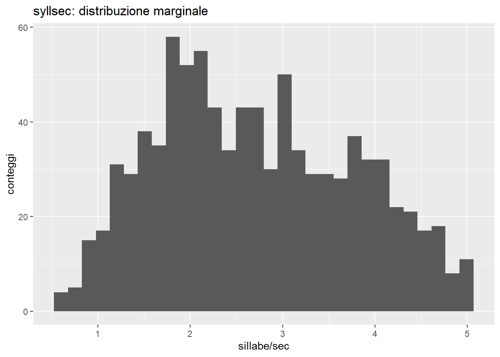
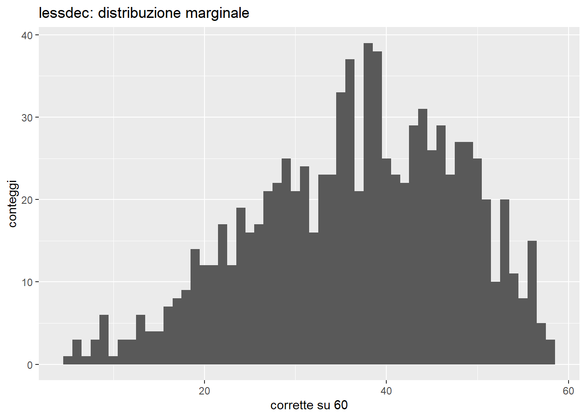
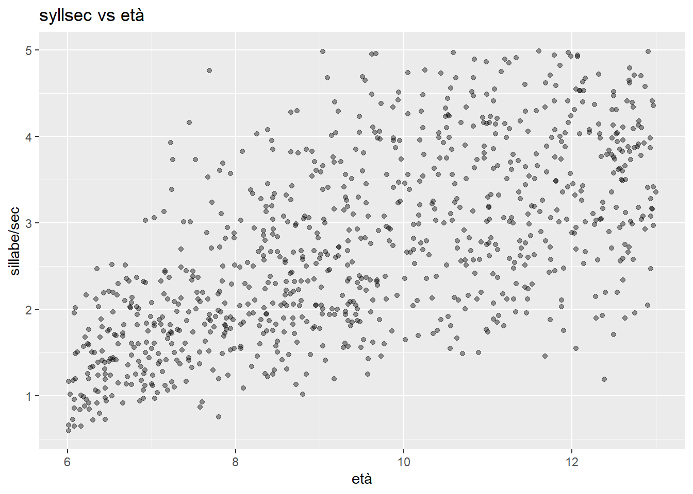
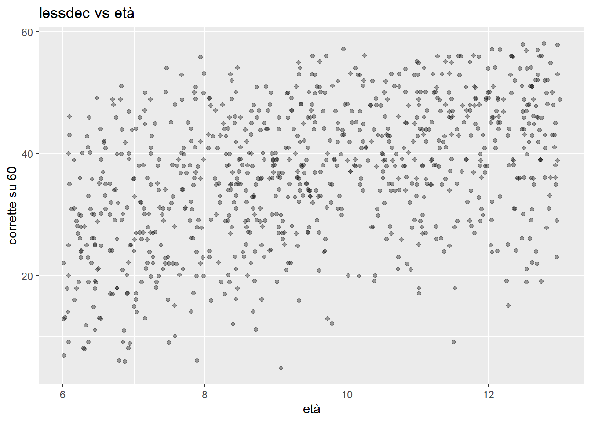
3. Upstream: il modello (GAMLSS)
Usiamo GAMLSS, che permette di modellare in funzione dell’età non solo la media ma anche la dispersione (e, se serve, la forma) della distribuzione. Scelte minimali ma coerenti con la natura dei punteggi:
Il risultato più importante del modello sono le curve di quantili condizionati: la distribuzione attesa dei grezzi a ogni età, senza spezzarla in fasce. Le linee indicano il 10°, il 50° e il 90° percentile.
Codice: curve di quantili per età
probs <-c(0.10, 0.50, 0.90)# syllsec: quantili lognormaliQ_syll <-NULLfor (a in age_grid) { pA <-predictAll(fit_syll, newdata =data.frame(age = a)) mu <-as.numeric(pA$mu); sg <-as.numeric(pA$sigma) q <-qLOGNO(probs, mu = mu, sigma = sg) Q_syll <-rbind(Q_syll, data.frame(age = a, prob = probs, q = q))}p1 <-ggplot() +geom_point(data = dat, aes(x = age, y = syllsec), alpha =0.2) +geom_line(data = Q_syll, aes(x = age, y = q, linetype =factor(prob, labels =c("p10","p50","p90"))),linewidth =1, colour ="darkred") +scale_x_continuous(breaks =seq(6, 13, 1)) +labs(title ="syllsec: quantili condizionati", x ="età", y ="sillabe/sec", linetype =NULL) +theme(legend.position ="bottom")print(p1)# lessdec: quantili beta-binomialeQ_less <-NULLfor (a in age_grid) { pA <-predictAll(fit_less, newdata =data.frame(age = a)) mu <-as.numeric(pA$mu); sg <-as.numeric(pA$sigma) q <-qBB(probs, mu = mu, sigma = sg, bd = k) Q_less <-rbind(Q_less, data.frame(age = a, prob = probs, q = q))}p2 <-ggplot() +geom_point(data = dat, aes(x = age, y = lessdec), alpha =0.2,position =position_jitter(height =0.15, width =0)) +geom_step(data = Q_less, aes(x = age, y = q, linetype =factor(prob, labels =c("p10","p50","p90"))),linewidth =1, colour ="darkred") +scale_x_continuous(breaks =seq(6, 13, 1)) +labs(title ="lessdec: quantili condizionati", x ="età", y ="corrette su 60", linetype =NULL) +theme(legend.position ="bottom")print(p2)
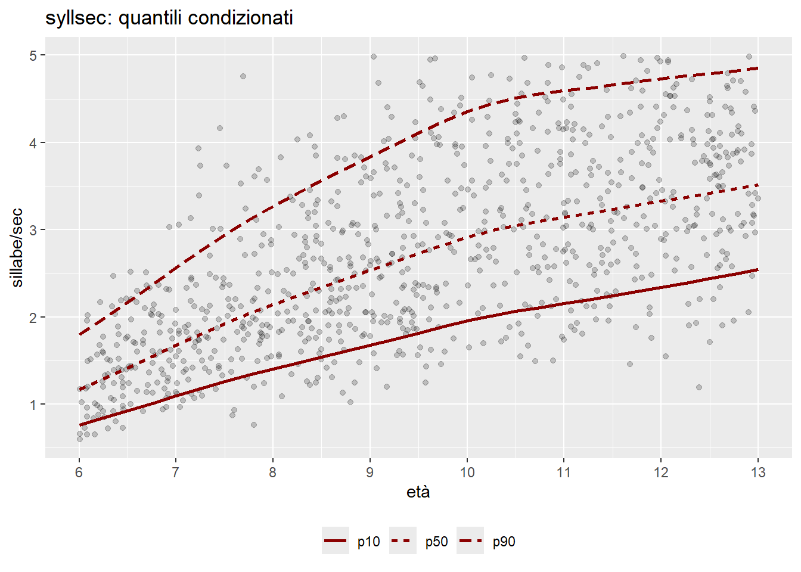
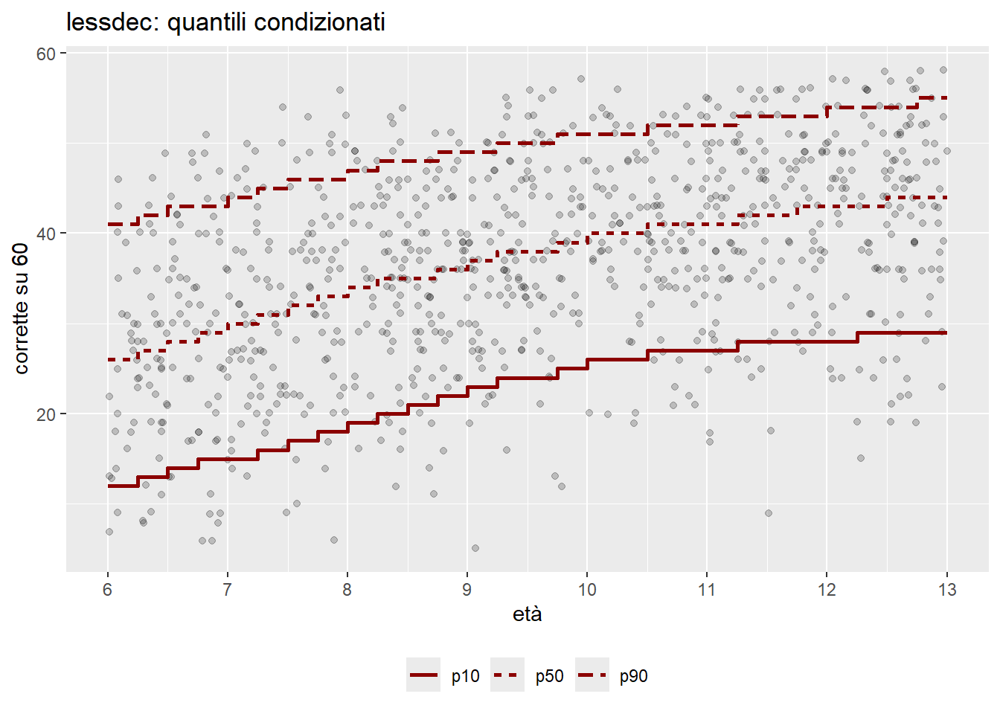
Non è un tutorial su GAMLSS, ma una diagnostica minima va guardata: residui e worm plot (utile per vedere distorsioni sulle code).
Codice e output: diagnostica minima GAMLSS
cat("AIC syllsec:", AIC(fit_syll), "\n")
AIC syllsec: 2091.986
Codice e output: diagnostica minima GAMLSS
cat("AIC lessdec:", AIC(fit_less), "\n")
AIC lessdec: 6662.337
Codice e output: diagnostica minima GAMLSS
par(mfrow =c(2,2))plot(fit_syll)
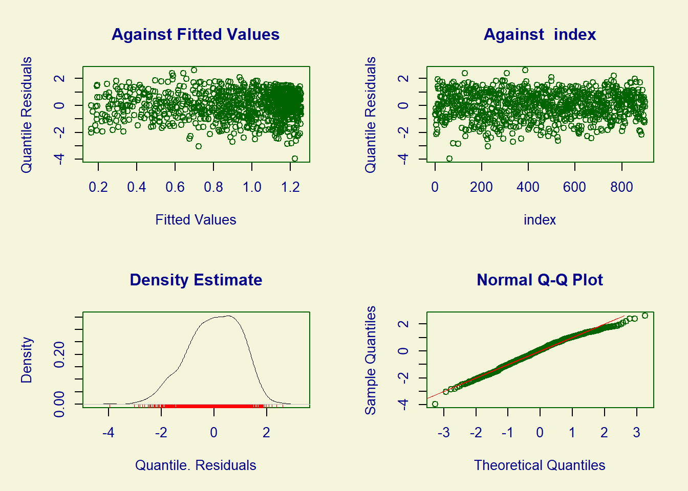
******************************************************************
Summary of the Quantile Residuals
mean = 0.0001048503
variance = 1.001112
coef. of skewness = -0.3693264
coef. of kurtosis = 2.800697
Filliben correlation coefficient = 0.9937754
******************************************************************
Codice e output: diagnostica minima GAMLSS
plot(fit_less)
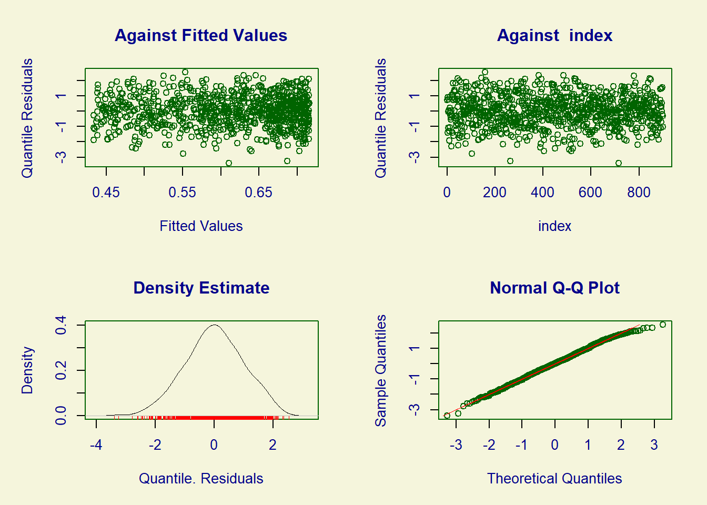
******************************************************************
Summary of the Randomised Quantile Residuals
mean = 0.001464403
variance = 0.9945069
coef. of skewness = -0.1263705
coef. of kurtosis = 2.79676
Filliben correlation coefficient = 0.9984936
******************************************************************
Codice e output: diagnostica minima GAMLSS
par(mfrow =c(1,1))try(wp(fit_syll), silent =TRUE)
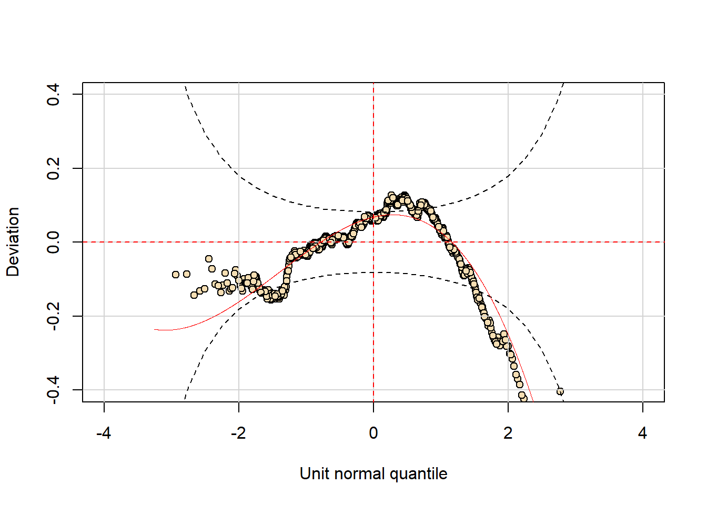
Codice e output: diagnostica minima GAMLSS
try(wp(fit_less), silent =TRUE)
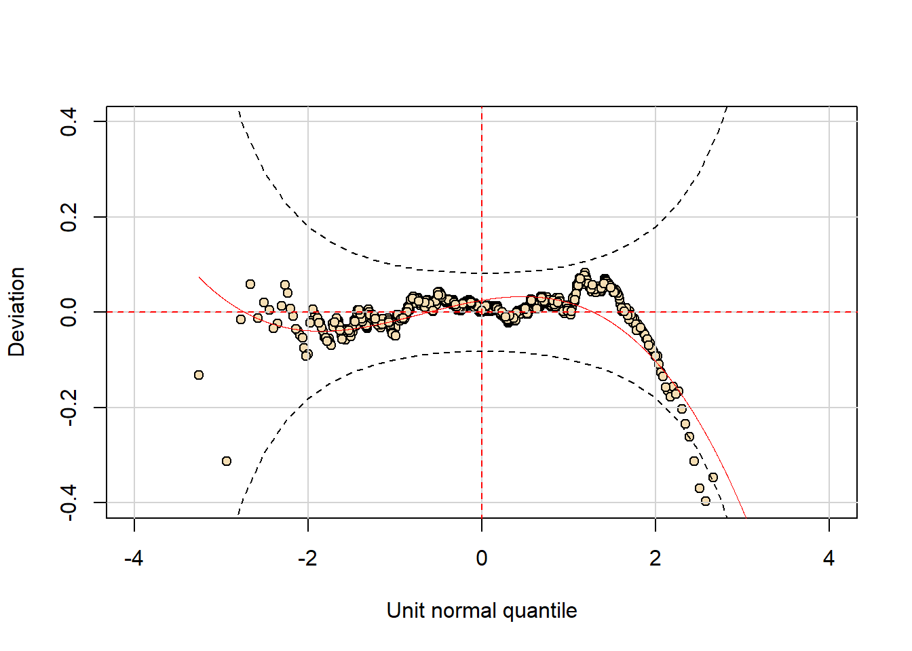
4. Upstream: dal modello a una tabella di conversione
Prima di generare tutto, vediamo l’operazione su una sola età (9 anni). La logica è sempre la stessa:
grezzo → percentile → z → punto standard
dal modello si ottiene la distribuzione dei grezzi a quell’età;
la sua funzione di ripartizione (CDF) dà il percentile di ogni possibile grezzo;
il percentile si trasforma in z con la normale inversa (qnorm): ora lo z ha davvero il significato di posizione in una normale, anche se i grezzi non erano gaussiani;
lo z si converte in punto standard 1–19 (o in qualsiasi altra metrica).
syllsec a 9 anni
age_show <-9.00# previsione parametri a età fissapA <-predictAll(fit_syll, newdata =data.frame(age = age_show))mu <-as.numeric(pA$mu)sg <-as.numeric(pA$sigma)# griglia raw fine per syllsec, più ampia dei dati osservati (0.6–5.0)# per non troncare le code: oltre il massimo in tabella lo z resterebbe bloccatoraw_grid_syll <-seq(0.10, 7.00, by =0.01)# percentile condizionato (CDF)p <-pLOGNO(raw_grid_syll, mu = mu, sigma = sg)# guardrail: monotonia grezzo->p e clamp codep <-clamp_prob(cummax(p))# conversioniz <-qnorm(p)ss <-ss19(z)tab_syll_9 <-data.frame(measure ="syllsec", age_grid = age_show,raw = raw_grid_syll, p = p, z = z, ss_1_19 = ss)
La tabella ha 691 righe (una ogni 0.01 sillabe/sec); qui ne mostriamo una ogni 0.25, tra 0.5 e 6.
Per un punteggio discreto, P(X ≤ x) assegna a chi ottiene esattamente x il percentile di chi sta “in cima” al gradino. Usiamo invece la correzione mid-P: P(X < x) + ½·P(X = x), cioè il punto medio del gradino. È una scelta pragmatica, che rende i percentili meno sbilanciati senza fingere che il punteggio sia continuo.
Il grafico grezzo → punto standard mostra subito la monotonicità e la “granularità” del punteggio discreto: per lessdec più grezzi consecutivi danno lo stesso punto standard.
Codice: grafici grezzo -> punto standard a 9 anni
p1 <-ggplot(tab_syll_9, aes(x = raw, y = ss_1_19)) +geom_line(linewidth =1) +labs(title ="syllsec: grezzo -> SS (età 9)", x ="sillabe/sec", y ="SS 1–19")p2 <-ggplot(tab_less_9, aes(x = raw, y = ss_1_19)) +geom_step(linewidth =1) +labs(title ="lessdec: grezzo -> SS (età 9)", x ="corrette su 60", y ="SS 1–19")print(p1)print(p2)
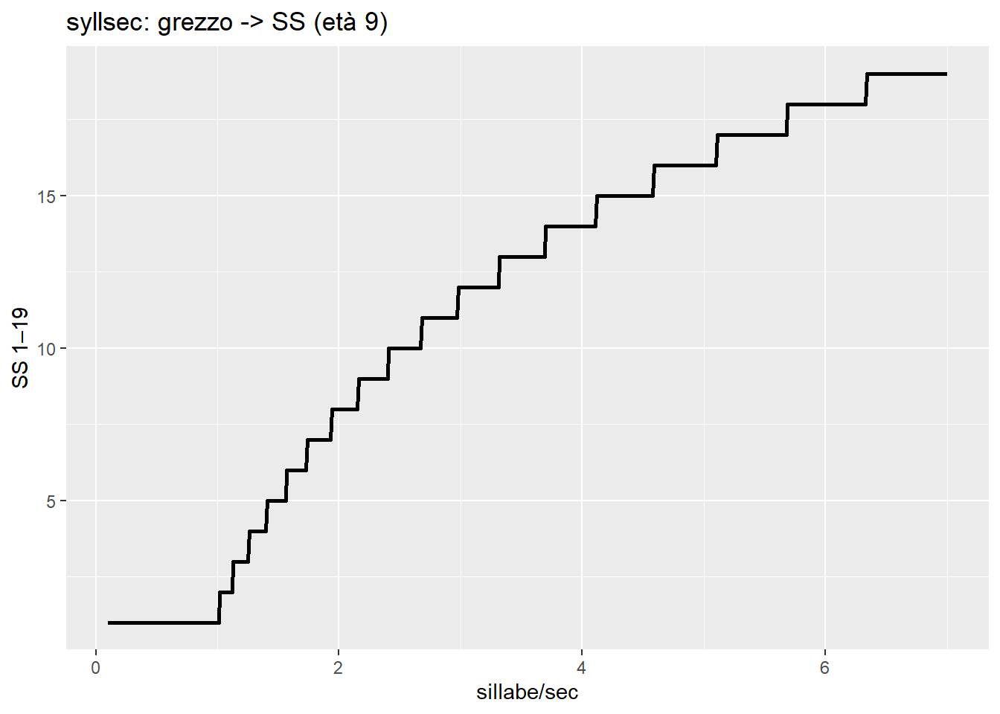
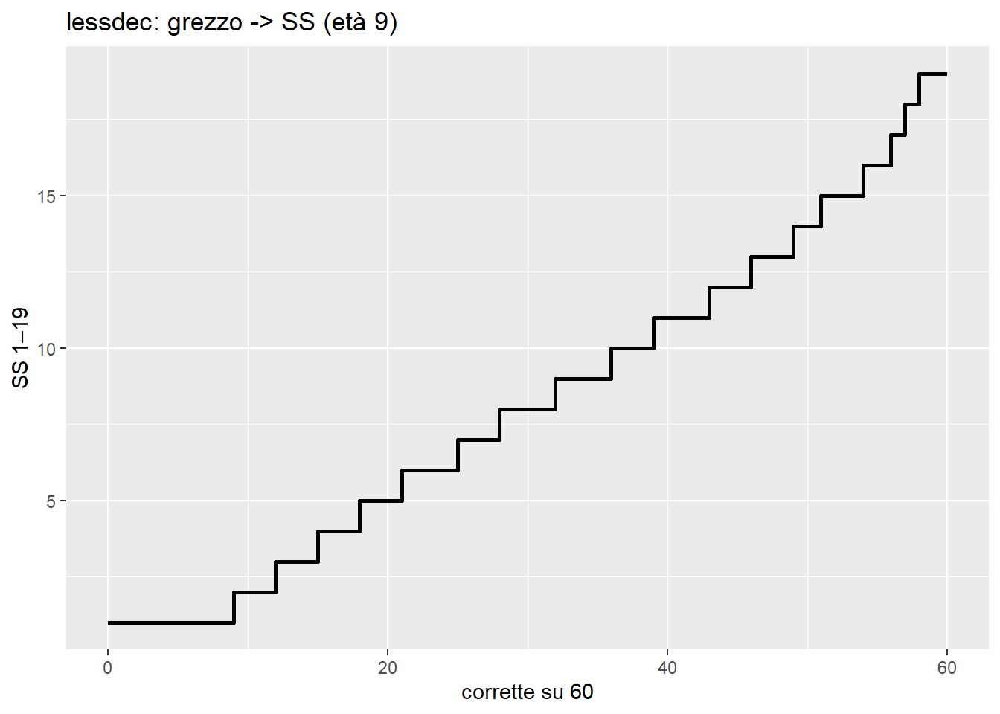
5. Upstream: le tabelle complete
Ora ripetiamo la stessa operazione per ogni età della griglia (da 6 a 13 anni, ogni 3 mesi). È la parte meccanica, e produce i due oggetti che verrebbero distribuiti come CSV.
Tabella primaria: grezzo → norme
Colonne: measure, age_grid, raw, p, z, ss_1_19.
Codice: generazione di raw_to_norm
raw_to_norm <-NULLfor (a in age_grid) {# --- syllsec --- pA <-predictAll(fit_syll, newdata =data.frame(age = a)) mu <-as.numeric(pA$mu); sg <-as.numeric(pA$sigma) p <-pLOGNO(raw_grid_syll, mu = mu, sigma = sg) p <-clamp_prob(cummax(p)) z <-qnorm(p) ss <-ss19(z) tmp <-data.frame(measure="syllsec", age_grid=a, raw=raw_grid_syll, p=p, z=z, ss_1_19=ss) raw_to_norm <-rbind(raw_to_norm, tmp)# --- lessdec --- pA <-predictAll(fit_less, newdata =data.frame(age = a)) mu <-as.numeric(pA$mu); sg <-as.numeric(pA$sigma) p_le <-pBB(raw_grid_less, mu = mu, sigma = sg, bd = k) p_lt <-pBB(raw_grid_less-1, mu = mu, sigma = sg, bd = k) p <- p_lt +0.5*pmax(0, p_le - p_lt) p <-clamp_prob(cummax(p)) z <-qnorm(p) ss <-ss19(z) tmp <-data.frame(measure="lessdec", age_grid=a, raw=raw_grid_less, p=p, z=z, ss_1_19=ss) raw_to_norm <-rbind(raw_to_norm, tmp)}# write.csv(raw_to_norm, "raw_to_norm.csv", row.names = FALSE)# controllo: a 9 anni il ciclo riproduce le tabelle costruite a mano soprastopifnot(isTRUE(all.equal(raw_to_norm$z[raw_to_norm$measure=="lessdec"& raw_to_norm$age_grid==9], tab_less_9$z)))stopifnot(isTRUE(all.equal(raw_to_norm$z[raw_to_norm$measure=="syllsec"& raw_to_norm$age_grid==9], tab_syll_9$z)))
La tabella ha 21.808 righe in tutto (29 età × tutti i grezzi possibili per le due prove).
Tabella inversa: punto standard → intervallo di grezzi
È la tabella “ideale” da mettere in appendice a un manuale: per ogni età e ogni punto standard, l’intervallo di grezzi corrispondente.
Per syllsec (continuo) gli estremi si ottengono invertendo SS = round(10 + 3z): ogni SS corrisponde a un intervallo di z ampio 1/3, che si riporta sui grezzi con i quantili lognormali.
Per lessdec (discreto) si inverte direttamente la tabella grezzo → SS, prendendo minimo e massimo; NA indica un punto standard non raggiungibile.
# età adiacenti in griglia e peso per l'interpolazionea0 <-max(age_grid[age_grid <= age0])a1 <-min(age_grid[age_grid >= age0])w <-if (a0 == a1) 0else (age0 - a0)/(a1 - a0)# --- syllsec: z da tabella via interpolazione sul raw, poi interpolazione sull'età ---tab0 <- raw_to_norm[raw_to_norm$measure=="syllsec"& raw_to_norm$age_grid==a0, ]tab1 <- raw_to_norm[raw_to_norm$measure=="syllsec"& raw_to_norm$age_grid==a1, ]z0 <-approx(tab0$raw, tab0$z, xout = raw_syll, rule =2)$yz1 <-approx(tab1$raw, tab1$z, xout = raw_syll, rule =2)$yz_syll <- z0 + (z1 - z0) * wp_syll <-clamp_prob(pnorm(z_syll))ss_syll <-ss19(z_syll)# --- lessdec: z da tabella via lookup sul raw discreto, poi interpolazione sull'età ---tab0 <- raw_to_norm[raw_to_norm$measure=="lessdec"& raw_to_norm$age_grid==a0, ]tab1 <- raw_to_norm[raw_to_norm$measure=="lessdec"& raw_to_norm$age_grid==a1, ]z0 <- tab0$z[tab0$raw == raw_less]z1 <- tab1$z[tab1$raw == raw_less]z_less <- z0 + (z1 - z0) * wp_less <-clamp_prob(pnorm(z_less))ss_less <-ss19(z_less)out <-data.frame(measure =c("syllsec","lessdec"),raw =c(raw_syll, raw_less),percentile =c(100*p_syll, 100*p_less),z =c(z_syll, z_less),ss_1_19 =c(ss_syll, ss_less))kable(out, digits =c(0,2,1,2,0), col.names =c("Prova", "Grezzo", "Percentile", "z", "SS 1–19"))
Prova
Grezzo
Percentile
z
SS 1–19
syllsec
1.61
6.0
-1.56
5
lessdec
36.00
43.2
-0.17
9
7. Downstream: il punteggio composito
Una volta che gli z sono coerenti, aggregarli è naturale. Ma attenzione a un errore frequente: la media di più z non è uno z. Se le prove non sono perfettamente correlate, la media ha una deviazione standard minore di 1, e trasformarla direttamente in un punteggio 100/15 schiaccia i casi estremi verso la media, proprio quelli che interessano clinicamente.
Con due prove correlate r, la media dei due z ha DS = √((1 + r)/2), e va divisa per questo valore prima di convertirla. La correlazione r si stima nel campione normativo sugli z (cioè al netto dell’età), ed è un parametro che va distribuito insieme alle tabelle.
# z di tutto il campione normativo, dal modello (stessa logica delle tabelle)pA <-predictAll(fit_syll, newdata =data.frame(age = dat$age))z_syll_all <-qnorm(clamp_prob(pLOGNO(dat$syllsec, mu = pA$mu, sigma = pA$sigma)))pA <-predictAll(fit_less, newdata =data.frame(age = dat$age))p_le <-pBB(dat$lessdec, mu = pA$mu, sigma = pA$sigma, bd = k)p_lt <-pBB(dat$lessdec-1, mu = pA$mu, sigma = pA$sigma, bd = k)z_less_all <-qnorm(clamp_prob(p_lt +0.5*pmax(0, p_le - p_lt)))r <-cor(z_syll_all, z_less_all)sd_mean <-sqrt((1+ r) /2)cat("Correlazione tra gli z (al netto dell'età): r =", round(r, 2), "\n")
Correlazione tra gli z (al netto dell'età): r = 0.39
cat("DS della media dei due z:", round(sd_mean, 2), "\n")
DS della media dei due z: 0.83
# composito: media degli z, ristandardizzata, poi standard score 100/15 (tipo QI)z_comp <-mean(out$z) / sd_meancomp <-data.frame(id = id0, age = age0,media_z =mean(out$z),z_comp = z_comp,SS_100_15 =round(100+15*z_comp),SS_ingenuo =round(100+15*mean(out$z)))kable(comp, digits =2,col.names =c("id", "Età", "Media degli z", "z composito", "Composito 100/15", "(senza correzione)"))
id
Età
Media degli z
z composito
Composito 100/15
(senza correzione)
360
9.3
-0.86
-1.04
84
87
Quanto conta la correzione? Con r = 0.39, un bambino con z = −2 in entrambe le prove ha media degli z −2, ma uno z composito di -2.4: un composito 100/15 di 64 invece di 70. Ha senso: essere molto in basso in due prove solo parzialmente correlate è più raro che esserlo in una sola. In alternativa, si può applicare il continuous norming direttamente al composito, con la stessa pipeline vista sopra.
Take-home
Non gaussiano va bene: il punto è modellare una distribuzione condizionata plausibile e poi standardizzare in modo interpretabile (grezzo → percentile → z).
Niente fasce d’età: il continuous norming usa tutto il campione per ogni età e riduce l’instabilità sulle code.
Tabelle, non modelli: distribuire CSV invece del modello rende lo scoring deterministico, verificabile e stabile nel tempo.
Aggregare, non contare: con z coerenti il composito viene naturale, purché sia ristandardizzato.